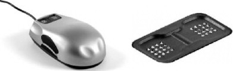

Introduction
La souris VTPlayer dispose, à l'emplacement des clics droits et gauche, deux matrices de 16 picots
chacune.
Le dispositif permet aux personnes valides et non voyantes de parcourir et de créer un circuit logique.
La souris joue alors le rôle d’interprète en permettant aux utilisateurs de lire le circuit par le biais des
picots qui se lèvent et se baissent à une certaine fréquence. L'application dispose également d'une
synthèse vocale lisant à haute voix, les éléments au fur et à mesure des déplacements du pointeur.

Créé avec HelpNDoc Personal Edition: Générateur d'aides Web gratuit